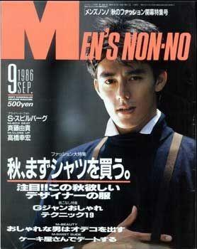
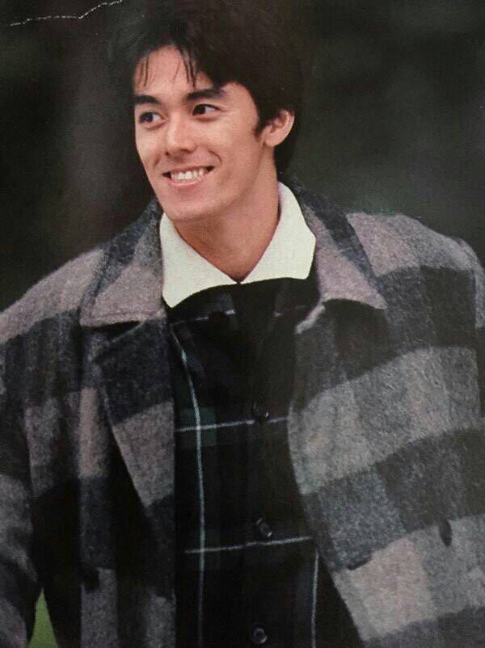
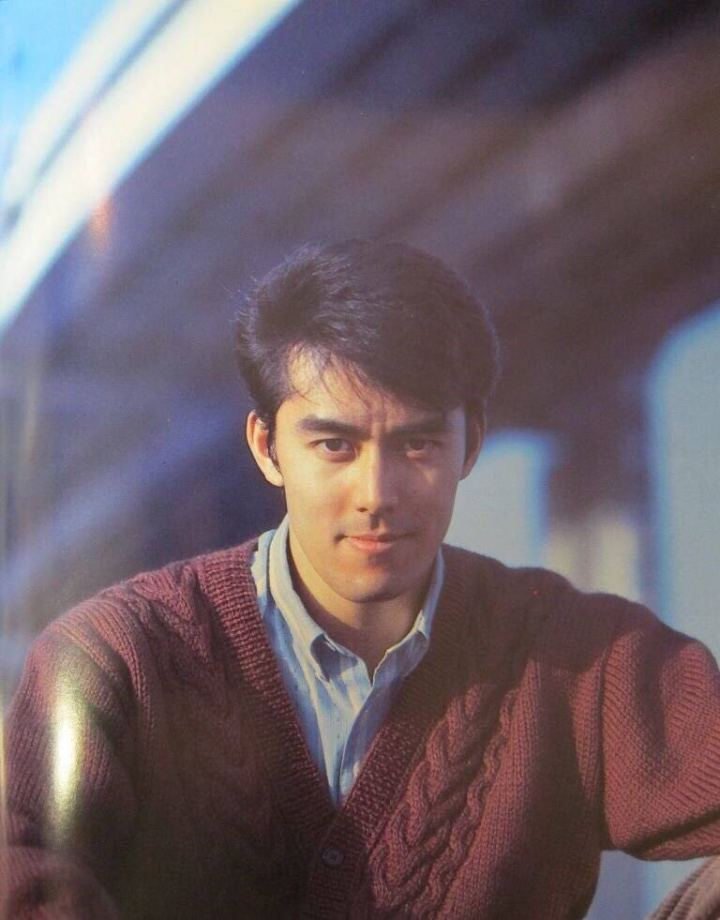

第一次见到 宽叔是在一个叫《不能结婚的男人》的电视剧里
当时剧荒，这个剧豆瓣评分8.9 名字又好玩就决定看一下
一看就爱上了这个角色，爱吃肉不想吃蔬菜，在桥边走路边走边拍栏杆，凭着诡异审美买的帽子还暗戳戳等别人夸他。阿部宽把角色的小癖好演得仿佛是他自己的癖好。不是美食番却惹得我每次看完都想去超市买牛排吃
看完剧后，对阿部宽的印象是大概算日本的黄渤吧，是个演技派。一不小心看到他年轻时候的照片，啊~太帅了吧（星星眼）



第一次见到 宽叔是在一个叫《不能结婚的男人》的电视剧里
当时剧荒，这个剧豆瓣评分8.9 名字又好玩就决定看一下
一看就爱上了这个角色，爱吃肉不想吃蔬菜，在桥边走路边走边拍栏杆，凭着诡异审美买的帽子还暗戳戳等别人夸他。阿部宽把角色的小癖好演得仿佛是他自己的癖好。不是美食番却惹得我每次看完都想去超市买牛排吃
看完剧后，对阿部宽的印象是大概算日本的黄渤吧，是个演技派。一不小心看到他年轻时候的照片，啊~太帅了吧（星星眼）
阿部宽（1964年6月22日－）就学于中央大学理工学部电气电子情报通信工学系
因为在大学一年级时（1983年）参加集英社“第三回Non-no boy フレンド大賞”选拔并获得优胜而开始了演艺之路。其后缔造了“Men's non no”创刊以来，连续四十三次登上封面的纪录。
宽叔真是人生如戏的实例啊
于人气鼎盛的时期，投资公寓等房地产，后因遭遇日本经济泡沫化，加上当时人气下降，于1987年23岁时已欠下数亿日圆的债务，此后花了20年以上的时间还债，自嘲于最落魄时期，约有三年曾靠打小钢珠补贴生计，后于2007年电影《超时空泡泡机》记者会中宣布，花了20年终于还清了所有债务，其后维持勤俭持家的金钱观，曾被媒体报导于2017年进行牙齿矫正治疗时，向牙医师杀价，要求确认健保给付范围而成功降价。
阿部宽还写过书哎！算做这个介绍没有亏，我还发现了新的宽叔 自传《阿部的悲剧》 自传《阿部的喜剧》